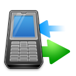

【手机监听软件】通话录音功能，一手掌握目标通话内容！
【手机监听软件】可以在目标手机与别人通话时，录制他们双方通话内容，然后将通话录音发送到你绑定好的邮箱里面；供下载听取。
【手机监控软件】环境监听功能，让目标手机变成监听器！
在目标手机待机状态时，用主控号码直接拔打被控号码来听取目标手机周围声音，无距离限制！
【手机监听软件】让短信一概不漏
【手机监控软件】把目标手机的所有往来信息备份一份发到你绑定好的邮箱上，对象、内容一概不漏！

通话记录发送功能
【手机监听软件】会把目标手机上的所有来电去电的记录发送到你绑定的邮箱或主控手机。
GPS定位，你的位置在哪我随时知道！
如果安装【手机监听软件】的手机有打开GPS定位功能的话，就可实现将对方位置发送到你的的邮箱或手机上。
支持大多数的智能手机的系统
【手机监控软件】支持塞班(symbian)，安卓(android)，苹果(ios) 等多种系统。
短信指令远程监控目标手机
【手机监控软件】手动安装完成后，您可以用任意手机发送短信指令来激活软件和进行参数设置，目标手机不会显示短信指令，快捷方便！
100%先测试功能的使用效果
【手机监控软件】可以免费测试，如果试用不满意，我们将不会收取任何费用，看到效果满意才购买！
【手机监控软件】隐蔽性好，不生成图标，后台运作！
【手机监控软件】拥有很强的隐蔽性，后台运作，安装完不生成图标；不定时更新升级，免杀。
无使用时间限制
【手机监听软件】先免费安装测试，效果满意后付款购买；一次性购买，无后续费用，无使用时间限制，永久使用。
监控的信息可电脑或手机查看
邮箱查看是指登录您绑定的邮箱来查看监控的内容，手机可以查看除了录音文件之外的内容。
EASY!【手机监控软件】简单使用，一学就会
【手机监控软件】安装简单快捷，只需使用目标手机登陆对应网址，软件即可下载和安装，整个过程大概需要1-2分钟。
你换卡我知道！换卡通知功能
当对方SIM卡发生改变时，【手机监控软件】将继续监控目标手机的所有数据。 并发送一封换卡通知邮件到您的信箱里面去。